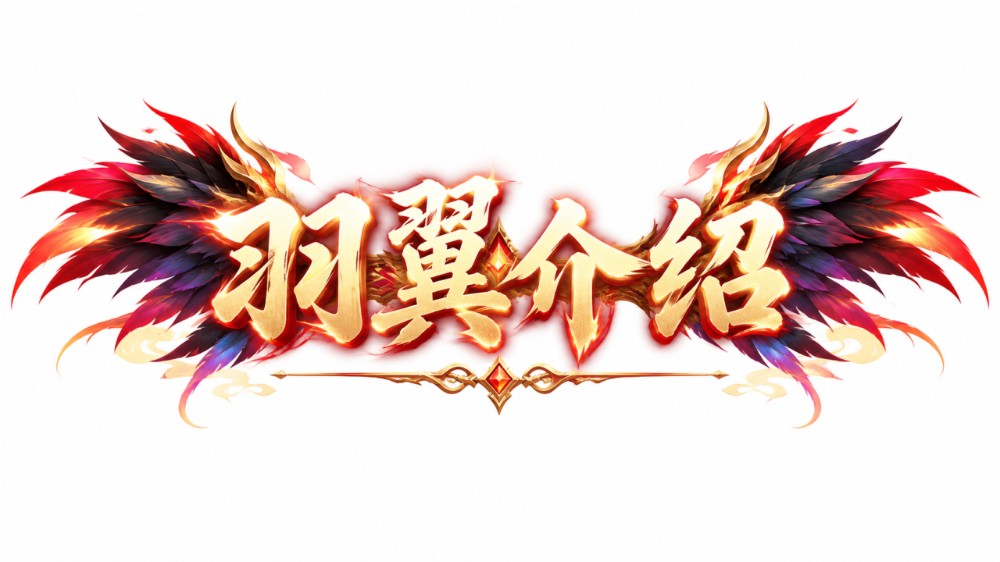
羽翼通过羽根解锁，做完羽翼指引任务获得羽根
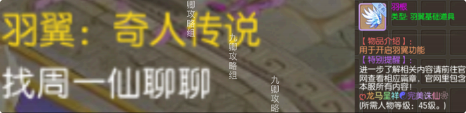
升级可用的两种材料【灵羽】【仙羽】
羽翼等级影响属性，升级到每 10 级需要进行升阶操作，才能继续升级
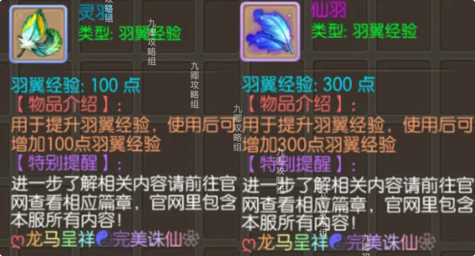
升阶可用的两种材料【羽化翎】【高级羽化翎】及升阶所需材料
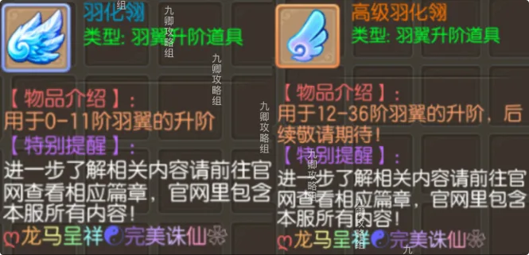
羽翼每升到 10 级可以进行升阶，升阶可获得额外属性、技能和新的外观，对属性和技能不满意，可进行重置
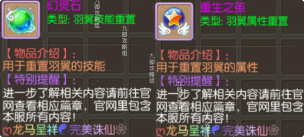
用于给羽翼换个颜色
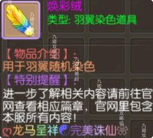
羽翼灵护提升分为强化与升星两个方面，强化升级可按百分比提升灵宠自带基础属性，升星可提升灵宠加成羽翼属性的百分比。
灵宠品质分为绿＜蓝＜紫＜橙＜彩，不同品质灵宠基础属性值不同，紫橙彩色灵宠自带对羽翼属性的百分比加成，紫色 10%、橙色 20%、彩色 30%。
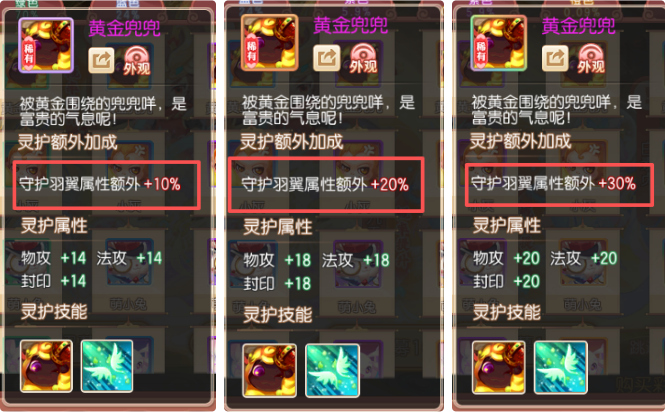
通过灵宠招募可获得新的灵宠，当获得同类灵宠的高品质卡牌时，则低品质卡牌自动转化为碎片，灵宠卡牌品质替换不影响灵宠目前已强化的属性等
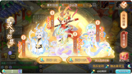
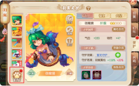
通过消耗银币和弥月币来强化灵宠属性、提升灵宠等级。（每个上限 100 级）
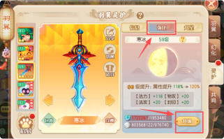
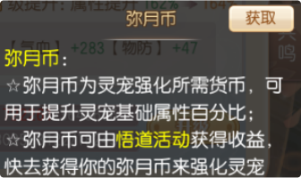
灵宠碎片可用来提升相应灵宠的星段，突破星级。升至 3 星与 5 星时可分别解锁灵宠专属技能
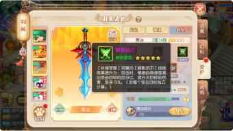
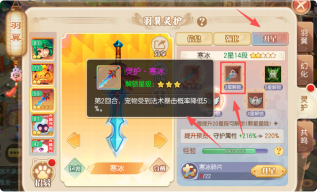
守护技能：
有守护的专属技能翅膀的话可以守护专属的享受技能的提升，没有的话可以守护其他的指定范围内的翅膀享受属性加成
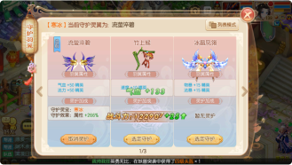
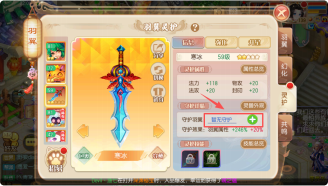
属性总览处可以选择生效的属性和技能
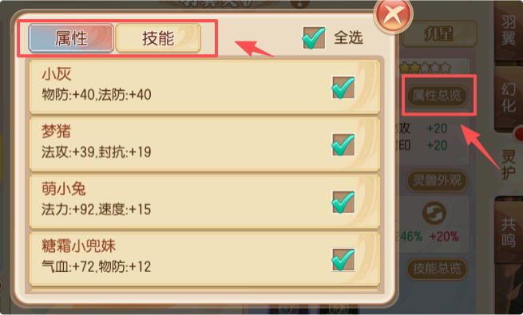
灵兽外观可以快速穿戴有的灵护外观
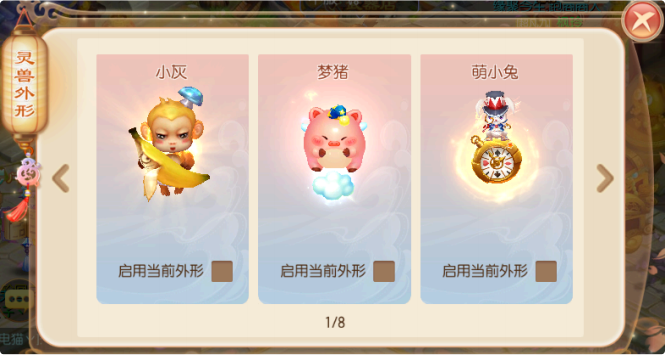
| 羽翼名称 | 技能名称 | 技能效果A | 技能效果B |
|---|---|---|---|
| 黄金兜兜 | 共鸣·黄金兜兜 | 第1回合，玩家受到物理伤害减免10% | 【桃之天天】羽翼的【万古长青】技能效果提升为:回合开始时当自身气血低于30%时，会恢复自身2000气血。 |
| 萌小兔 | 共鸣·萌小兔 | 第1回合，玩家受到法术伤害减免10% | 【沧澜如雪】羽翼的【生命守护】技能效果提升为:宠物出场后为宠物增加持续2回合的吸收伤害护盾，吸收量=手动分配的力量或灵性中较大的值x10，对子女无效。 |
| 鲁鲁 | 共鸣·鲁鲁 | 第2回合，玩家受到法术伤害减免10% | 【暗夜假面】羽翼的【圣灵之翼】技能效果提升为:每回合结束时有8%几率因为羽翼的庇护使玩家在下一回合处于免伤的状态，死亡状态也可触发。 |
| 皮皮 | 共鸣·皮皮 | 第1回合，玩家受到封印命中降低5% | 【绿野仙踪】羽翼的【神佑复生】技能效果提升为:死亡时有8%概率复活并回复全部气血。 |
| 小纸人 | 共鸣·小纸人 | 第1回合，宠物法术伤害增加10% | 【仙灵蝶翼】羽翼的【死亡之眸】技能效果提升为:攻击时，5%概率恐惧主目标。 |
| 赛博小灰 | 共鸣·赛博小灰 | 第1回合，宠物受到物理暴击概率降低5% | 【萌虎飞行员】羽翼的【转日回天】技能效果提升为:防御时，恢复自身8%的气血和魔法 |
| 白素贞 | 共鸣·白素贞 | 第2回合，玩家法术攻击提升3% | 【冰晶凋零】羽翼的【卧薪尝胆】技能效果提升为:被暴击后增加自身5%物理攻击、法术攻击、封印命中率，治疗效果，持续3回合，可叠加3层 |
| 九天灵蛇 | 共鸣·九天灵蛇 | 第1回合，玩家法术攻击提升3% | 【时运福兔】羽翼的【时运加护】技能效果提升为:召唤宠物后，直到本回合结束前，宠物获得必定触发的保命效果(不限次数)，且该宠物本回合伤害提升10%。 |
| 龙三太子 | 共鸣·龙三太子 | 第2回合，玩家物理攻击提升3% | 【夜之锋刃】羽翼的【他化自在】技能效果提升为:每过4回合增加3%伤害，1%封印命中，1%治疗效果，最多增加7层。 |
| 美猴王 | 共鸣·美猴王 | 第1回合，玩家物理攻击提升3% | 【铁翼猎鹰】羽翼的【铁翼突袭】技能效果提升为:每回合末，有25%概率为自身附加增益状态，使攻击可以无视宠物的减伤类技能(招架、抗拒、铁壁、凝神、天龙圣体持续3回合，不可叠加、替换、驱散 |
| 小灰 | 共鸣·小灰 | 第2回合，玩家受到物理伤害减免10% | 【清酒弥风】羽翼的【怒火中烧】技能效果提升为:当友方角色或仙侣阵亡时，激发自身愤怒，恢复自身8点怒气(重生、保命不触发） |
| 稻草人 | 共鸣·稻草人 | 第2回合，玩家受到封印命中降低5% | 【荷莲浪涌】羽翼的【狂怒】技能效果提升为:战斗第一回合开始前增加30点怒气固定值 |
| 炸弹怪 | 共鸣·炸弹怪 | 第1回合，玩家受到治疗效果提升10% | 【罪恶与救赎】羽翼的【救赎】技能效果提升为:每回合结束有15%几率解除自身的封印状态 |
| 粽子 | 共鸣·粽子 | 第2回合，玩家受到治疗效果提升10% | 【双子化蝶】羽翼的【蝶舞徐行】技能效果提升为:有15%概率将攻击的主目标速度降低10%，持续3回合 |
| 糕糕 | 共鸣·糕糕 | 第1回合，玩家受到物理暴击概率降低5% | 【圣晶宝蝶】羽翼的【攻其颓弱】技能效果提升为:攻击目标若有负面状态，本次伤害结果增加15%。 |
| 煎蛋鸡 | 共鸣·煎蛋鸡 | 第2回合，玩家受到物理暴击概率降低5% | 【机器侠】羽翼的【机械领主】技能效果提升为:受到物理攻击时，5%概率使伤害变为1点。 |
| 包子脸星人 | 共鸣·包子脸星人 | 第1回合，玩家受到法术暴击概率降低5% | 【九天玄翼】羽翼的【绝地反击】技能效果提升为:被攻击后，如果血量低于40%会触发一个自身血量30%的护盾。(每场战斗只能触发一次） |
| 小海魂 | 共鸣·小海魂 | 第2回合，玩家受到法术暴击概率降低5% | 【守护天使】羽翼的【神灵守护】技能效果提升为:第一回合30%概率免疫首次伤害。 |
| 灵音 | 共鸣·灵音 | 第1回合，宠物受到物理伤害减免10%. | 【愤怒的寄居蟹】羽翼的【愤怒屏障】技能效果提升为:受到法术攻击时，5%概率使伤害变为1点。 |
| 叠叠猫 | 共鸣·叠叠猫 | 第2回合，宠物受到物理伤害减免10%. | 【凤舞九天】羽翼的【凤舞九天】技能效果提升为:回合末，15%概率增加150速度，持续3回合。 |
| 梦猪 | 共鸣·梦猪 | 第1回合，宠物受到法术伤害减免10% | 【天使之心】羽翼的【天使之心】技能效果提升为:被复活时25%概率额外恢复20%自身气血上限。 |
| 小浣熊 | 共鸣·小浣熊 | 第2回合，宠物受到法术伤害减免10% | 【穹云华图】羽翼的【单枪匹马】技能效果提升为:没有宠物出战时，受到的伤害降低25%。 |
| 小团酱 | 共鸣·小团酱 | 第1回合，宠物物理伤害增加10% | 【夜行械鹰】羽翼的【荆棘魔甲】技能效果提升为:受到攻击时，8%概率混乱攻击者。 |
| 天琊 | 共鸣·天琊 | 第2回合，宠物物理伤害增加10% | 【黑翼之眼】羽翼的【宠爱有加】技能效果提升为:首回合，宠物受到的伤害降低60%。 |
| 小鬼魂 | 共鸣·小鬼魂 | 第2回合，宠物法术伤害增加10% | 【天使之翼】羽翼的【神之庇佑】技能效果提升为:首回合，反弹所受伤害的30%给攻击者。 |
| 御魔镜 | 共鸣·御魔镜 | 第2回合，宠物受到物理暴击概率降低5% | 【绫罗幻蝶】羽翼的【两仪微尘】技能效果提升为:每回合末降低被暴击率3%，最多叠加10层，持续到战斗结束。 |
| 南瓜头死神 | 共鸣·南瓜头死神 | 第1回合，宠物受到法术暴击概率降低5% | 【幸运777】羽翼的【逆势灵佑】技能效果提升为:回合内每受击4次，可以获得抵挡下一次攻击的状态，状态持续1回合，状态以及计次回合末清除。 |
| 寒冰 | 共鸣·寒冰 | 第2回合，宠物受到法术暴击概率降低5% | 【丝缕翠蝶】羽翼的【蝶影迅刃】技能效果提升为:攻击时，根据自身速度高出受击目标的百分比，提升对目标的伤害，至多15%。(对每个受击目标独立计算。) |
| 哮天犬 | 共鸣·哮天犬 | 第1回合，宠物法术防御提升5%。 | 【剑与荣耀】羽翼的【血之狂暴】技能效果提升为:若出战的宠物因死亡离场，自己会进入狂暴状态增加13%伤害、13%治疗量、7%封印命中概率，持续3回合。 |
| 甜点萌蛇 | 共鸣·甜点萌蛇 | 第1回合，宠物法术攻击提升3%。 | 【蓝叶盈露】羽翼的【先发制敌】技能效果提升为:攻击目标时，若目标本回合还未进行行动，则造成的伤害提升13%。 |
| 糖霜小兜妹 | 共鸣·糖霜小兜妹 | 第2回合，宠物物理攻击提升3%。 | 【金华织羽】羽翼的【织羽之光】技能效果提升为:第1至10回合为自身增加气血+400，速度+30。第11至20回合，为自身增加气血+600，速度+40。第21回合及以后，为自身增加气血+800，速度+50。该不可叠加，不可驱散。 |
| 龙傲天 | 共鸣·龙傲天 | 第1回合，宠物物理攻击提升3%。 | 【流光樱彩】羽翼的【龙鳞护体】技能效果提升为:受到攻击时，有7%概率令攻击者进入麻痹负面状态，持续2回合，麻痹状态下无法行动 |
| 焱凰 | 共鸣·焱凰 | 第2回合，宠物法术攻击提升3%。 | 【幽冥鬼蝶】羽翼的【幽冥神力】技能效果提升为:宠物死亡后，30%概率消耗人物10%气血上限的气血复活该宠物并回复30%气血，不受审判技能的影响，每场战斗只能触发一次。 |
| 青牛 | 共鸣·青牛 | 第1回合，宠物物理防御提升5%。 | 【星痕之翼】羽翼的【吞星吐月】技能效果提升为:引天地之精华灌注于身，进入战斗后，提升8%的最大气血 |
| 等级段 | 所需经验 |
|---|---|
| 1-9 级 | 810 |
| 10-19 级 | 1850 |
| 20-29 级 | 3030 |
| 30-39 级 | 4705 |
| 40-49 级 | 6880 |
| 50-59 级 | 9555 |
| 60-69 级 | 12910 |
| 70-79 级 | 17260 |
| 80-89 级 | 22610 |
| 90-99 级 | 28960 |
| 100-109 级 | 36310 |
| 110-119 级 | 44660 |
| 120-129 级 | 54010 |
| 130-139 级 | 64360 |
| 140-149 级 | 75710 |
| 150-159 级 | 88060 |
| 160-169 级 | 101410 |
| 170-179 级 | 115760 |
| 180-189 级 | 131110 |
| 190-199 级 | 197150 |
| 200-209 级 | 310200 |
| 210-219 级 | 473300 |
| 220-229 级 | 728300 |
| 230-239 级 | 1135000 |
| 240-249 级 | 1745000 |
| 250-259 级 | 2445000 |
| 260-269 级 | 3145000 |
| 270-279 级 | 3845000 |
| 280-289 级 | 4545000 |
| 290-299 级 | 5245000 |
| 300-309 级 | 5945000 |
| 310-319 级 | 6950000 |
| 320-329 级 | 8500000 |
| 330-339 级 | 9862000 |
| 340-349 级 | 9862000 |
| 350-359 级 | 9862000 |
| 360-369 级 | 9862000 |
| 升阶阶数 | 所需道具及数量 |
|---|---|
| 1 阶 | 羽化翎 ×1 |
| 2 阶 | 羽化翎 ×2 |
| 3 阶 | 羽化翎 ×3 |
| 4 阶 | 羽化翎 ×4 |
| 5 阶 | 羽化翎 ×5 |
| 6 阶 | 羽化翎 ×7 |
| 7 阶 | 羽化翎 ×10 |
| 8 阶 | 羽化翎 ×15 |
| 9 阶 | 羽化翎 ×23 |
| 10 阶 | 羽化翎 ×28 |
| 11 阶 | 羽化翎 ×33 |
| 12 阶 | 高级羽化翎 ×38 |
| 13 阶 | 高级羽化翎 ×45 |
| 14 阶 | 高级羽化翎 ×60 |
| 15 阶 | 高级羽化翎 ×80 |
| 16 阶 | 高级羽化翎 ×100 |
| 17 阶 | 高级羽化翎 ×100 |
| 18 阶 | 高级羽化翎 ×100 |
| 19 阶 | 高级羽化翎 ×200 |
| 20 阶 | 高级羽化翎 ×300 |
| 21 阶 | 高级羽化翎 ×400 |
| 22 阶 | 高级羽化翎 ×500 |
| 23 阶 | 高级羽化翎 ×600 |
| 24 阶 | 高级羽化翎 ×700 |
| 25 阶 | 高级羽化翎 ×800 |
| 26 阶 | 高级羽化翎 ×900 |
| 27 阶 | 高级羽化翎 ×1000 |
| 28 阶 | 高级羽化翎 ×1100 |
| 29 阶 | 高级羽化翎 ×1200 |
| 30 阶 | 高级羽化翎 ×1300 |
| 31 阶 | 高级羽化翎 ×1800 |
| 32 阶 | 高级羽化翎 ×2300 |
| 33 阶 | 高级羽化翎 ×1600 |
| 34 阶 | 高级羽化翎 ×1700 |
| 35 阶 | 高级羽化翎 ×1800 |
| 36 阶 | 高级羽化翎 ×1900 |
| 技能阶数 | 技能名称 | 技能效果 |
|---|---|---|
| 2 阶 | 和光同尘 | 所有技能耗蓝降低 20% |
| 2 阶 | 金钟护体 | 进行防御时 ，受到的物理伤害降低为正常防御状态的50% |
| 2 阶 | 不动如山 | 受到物理伤害时 ，降低 3% 的被暴击概率 |
| 2 阶 | 不坏金身 | 受到法术伤害时 ，降低 3% 的被暴击概率 |
| 2 阶 | 伺机而逃 | 增加自身 10% 的逃跑成功率 |
| 4 阶 | 身强力壮 | 降低自身受到的 30% 的物理暴击伤害 |
| 4 阶 | 上善若水 | 降低自身受到的 30% 的法术暴击伤害 |
| 4 阶 | 百毒不侵 | 降低受到的毒伤害50% |
| 6 阶 | 凝神静气 | 增加物理命中5% |
| 6 阶 | 疾闪风急 | 增加物理闪避率5% |
| 6 阶 | 身轻如风 | 增加法术闪避率5% |
| 8 阶 | 包罗万象 | 受到物理伤害时 ，有 10% 几率使受到的伤害减半 |
| 8 阶 | 孤军奋战 | 无宠物参战的状态下 ， 自身受到的所有伤害均降为正常的80% |
| 8 阶 | 明镜止水 | 受到法术伤害时 ，有 10% 几率使受到的伤害减半 |
| 10 阶 | 乘胜追击 | 法术攻击目标时 ，有 8% 的几率追加一次单法攻击 |
| 10 阶 | 医者精诚 | 受到的门派治疗技能效果提升5% |
| 11 阶 | 灵丹妙药 | 战斗中受到非复活类的药品治疗量增加 20% |
| 11 阶 | 本草纲目 | 战斗中使用非复活类药品恢复气血 时 ，有 10% 几率使气血恢复效果加倍 |
| 12 阶 | 万佛朝宗 | 使用门派技能恢复气血时 ，有 8% 几率增加一个治疗目标 ，触发时治疗效果降低 10% |
| 12 阶 | 袖纳乾坤 | 使用门派封印类技能时 ，有 8% 几率增加一个封印目标 |
| 13 阶 | 背水一战 | 自身气血低于 40% 时 ，伤害提高 10% |
| 13 阶 | 心无杂念 | 使用门派技能恢复气血时 ，有 10% 概率提升目标封印抗性 ，持续 2 回合 |
| 14 阶 | 太和弥清 | 每回合结束有 30% 几率解除自身的一条负面效果（不包括封印状态） |
| 14 阶 | 灵韵加身 | 降低自身受到的 5% 的封印命中率 |
| 15 阶 | 丹田贯注 | 增加物理暴击伤害20% |
| 15 阶 | 五气朝元 | 增加法术暴击伤害20% |
| 16 阶 | 招无常式 | 进行攻击时 ，伤害在 85%-120% 之间随机波动 |
| 16 阶 | 妙手仁心 | 使用门派技能恢复气血时 ，效果增加10% |
| 16 阶 | 怒发冲冠 | 怒气消耗降低 10% |
| 17 阶 | 浴血奋战 | 当前参战宠物气血低于 40% 时 ，增加10% 宠物伤害 |
| 17 阶 | 其疾如风 | 回合末 10% 几率触发 ，增加 10% 自身速度 ，持续 2 回合 |
| 18 阶 | 钩魄摄魂 | 法术攻击时 ，有 5% 几率使目标本回合混乱 ，随机攻击友方 |
| 18 阶 | 分筋错骨 | 物理攻击时 ，有 5% 几率使目标本回合伤筋断骨 ，本回合无法出手 |
| 19 阶 | 势如破竹 | 攻击时忽视目标 5% 的物理防御 |
| 19 阶 | 势不可挡 | 攻击时忽视目标 5% 的法术防御 |
| 20 阶 | 不动明王 | 降低受到的群体门派和宠物技能伤害5% |
| 20 阶 | 百折不挠 | 降低宠物受到的群体门派和宠物技能伤害5% |
| 21 阶 | 潜伏 | 降低宠物 5% 的速度 |
| 21 阶 | 突击 | 提升宠物 5% 的速度 |
| 22 阶 | 潜龙 | 降低子女 5% 的速度 |
| 22 阶 | 勇猛 | 提升子女 5% 的速度 |
| 23 阶 | 坚韧不拔 | 增加耐力 30 |
| 23 阶 | 仙风道骨 | 增加体质30 |
| 24 阶 | 怒目金刚 | 增加力量 40 |
| 24 阶 | 慧根深深 | 增加灵性 40 |
| 24 阶 | 暗影加身 | 增加敏捷 40 |
| 25 阶 | 魔力涌动 | 防御时恢复自身 5% 法力 |
| 26 阶 | 阳关三迭 | 每到回合数以 3 为结尾的回合 ，回合初恢复 20 怒气 |
| 26 阶 | 六合之外 | 每到回合数以 6 为结尾的回合 ，回合初恢复 20 怒气 |
| 27 阶 | 神之义眼 | 物理命中增加5% |
| 27 阶 | 天帝之眼 | 法术命中增加5% |
| 28 阶 | 两小无猜 | 召唤宠物和子女后 ，宠物和子女对子女伤害提升50% ，持续 3 回合 |
| 29 阶 | 龙甲护体 | 减少 5% 敌方宠物单位对自己的物理伤害 |
| 29 阶 | 龙魂护体 | 减少 5% 敌方宠物单位对自己的法术伤害 |
| 30 阶 | 山崩不摧 | 减少 5% 敌方角色单位对自己的物理伤害 |
| 30 阶 | 弱水三千 | 减少 5% 敌方角色单位对自己的法术伤害 |
| 31 阶 | 避其锋芒 | 减少 5% 受到的物理伤害 |
| 31 阶 | 暂避其锋 | 减少 5% 受到的法术伤害 |
| 32 阶 | 荒古圣体 | 战斗第 5 回合 ，免疫负面类状态 |
| 32 阶 | 莽荒圣体 | 战斗第 5 回合 ，免疫毒类状态 |
| 33 阶 | 坚韧 | 增加 5% 宠物物防 |
| 33 阶 | 护盾 | 增加 5% 宠物法防 |
| 34 阶 | 强攻 | 增加 5% 宠物物攻 |
| 34 阶 | 神威 | 增加 5% 宠物法攻 |
| 35 阶 | 锋势渐盈 | 增加 5% 造成的物理伤害 |
| 35 阶 | 刃魄凝华 | 增加 5% 造成的法术伤害 |
| 36 阶 | 绿新邪灵 | 战斗第 10 回合 ，免疫负面类状态 |
| 36 阶 | 清澈净灵 | 战斗第 10 回合 ，免疫毒类状态 |